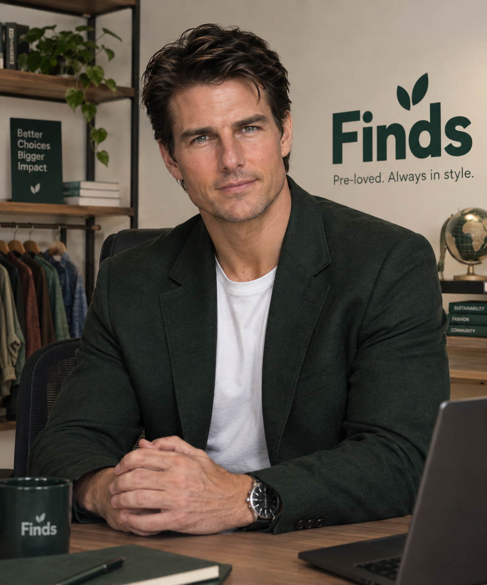

Style with personality
The best finds feel like you. We celebrate individual taste and pieces with their own character.
We’re here for the jacket with character. The perfect everyday tee.
The pieces that still have a lot of life left in them.
Finds is a simple online marketplace for second-hand clothing, thrifted fashion, and pre-loved clothes. We make it easier to discover affordable fashion and find clothing pieces that match your style.
Whether you're looking to buy second-hand clothes, sell pre-loved clothing, or discover your next thrift find, Finds brings buyers and sellers together in one organized clothing marketplace.
Our goal is to make thrift fashion and sustainable fashion more accessible to students, young professionals, budget-conscious shoppers, thrift sellers, and anyone looking for affordable pre-loved clothing.

JOHN SMITH · FOUNDERJohn Smith is the founder of Finds, a student-built online marketplace created to make second-hand clothing and thrift fashion easier to discover and access.
With an interest in affordable fashion and sustainable shopping, John envisioned a platform where people could buy and sell pre-loved clothing while giving good pieces a second chance.
His goal is to make the experience of finding, buying, and selling second-hand clothes simple, organized, and accessible for everyone.
The best finds feel like you. We celebrate individual taste and pieces with their own character.
Rewearing and passing things on keeps useful pieces in wardrobes and out of the forgotten pile.
Behind every find is a person. We want the experience to feel clear, welcoming, and easy to understand.
Explore the prototype and think about what would make Finds useful to you.
Try our contact page